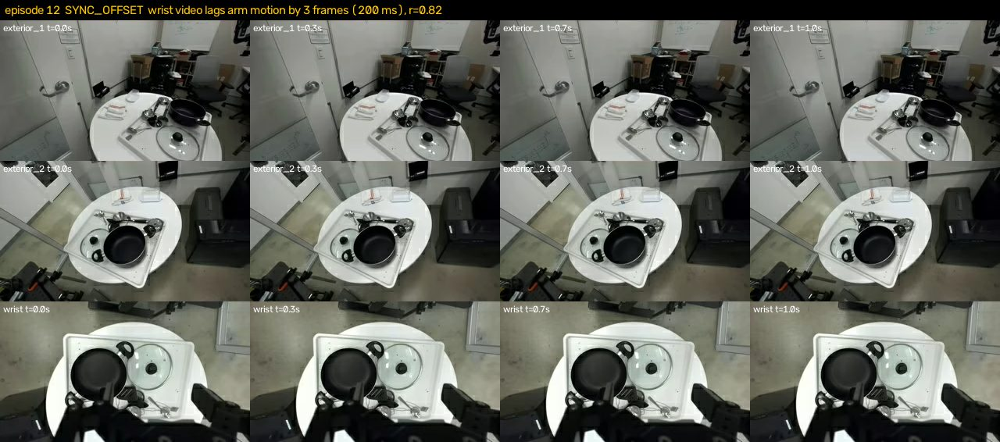
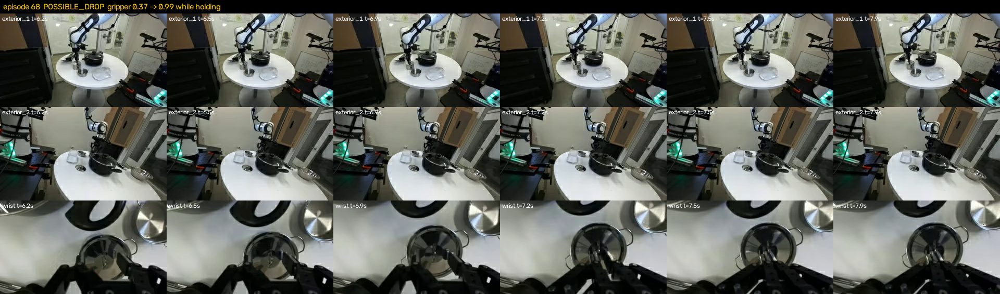

Fastagger Check · open source · Apache 2.0
A free first-pass check for LeRobot datasets. It reads the robot's state, actions and every camera, and flags episodes worth a second look: missing instructions, long idle stretches, one-step action spikes, possible dropped objects, frozen video and cameras out of sync with the arm.
Tested on public data
Flags are candidates, not confirmed faults. The drop flags we checked frame by frame were objects placed on purpose, and episode 12's lag hasn't been confirmed by a person yet.
Example


The checks
| Flag | Raised when |
|---|---|
| MISSING_INSTRUCTION | The episode has no language instruction |
| TRUNCATED | The episode is shorter than 2 seconds |
| LONG_IDLE | The arm doesn't move for 3 seconds or more |
| ACTION_SPIKE | An action value jumps for one step and jumps straight back |
| POSSIBLE_DROP | The gripper holds steady, then snaps fully shut |
| MANY_GRASPS | The gripper closes three or more times |
| SYNC_OFFSET | Wrist video lags the arm by 2 or more frames |
| FROZEN_VIDEO | A camera's picture stops changing while the arm moves |
| DROPPED_FRAMES · TIMESTAMP_GAP · MISSING_DATA · DUPLICATE | Video and data don't line up, have gaps, missing values or copied episodes |
Don't have time to run it?
A two-minute form about your robot, data and deadline. We reply within one working day with a start date and a payment link.